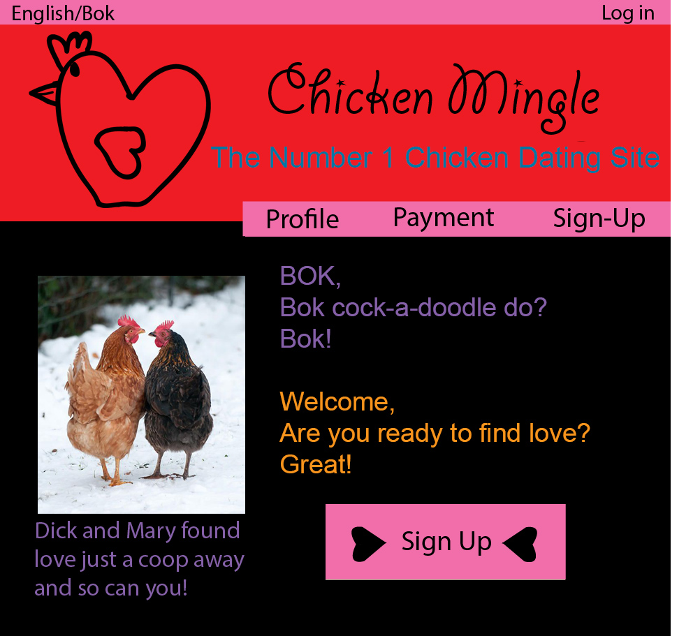

1. I enjoyed the presentation, I think everyone knew their part well and spoke clearly. 2. The powerpoint was really good, simple and straight to the point. Made information clear and easy to understand. 3. I think you guys could have interacted more with the audience but the assignment made up for it. Overall really well done.
For the design I noticed three flaws 1.The signup wasn't centered and threw me off, so I fixed it by centering it in the box. 2. I didn't think the font colour in the navs worked so I switched them to a darker colour so people could read them better. I also didn't like how both were different colours so I changed them to match. 3. The title was too simple, love isn't simple. For the website being a dating site the font needed to be more wimsicle or however you spell that work, Atom doesn't have auto correct so I changed the font to a more handwritten love letter kind of thing.
I also added arrows to the Sign up to draw the eye. I added text underneath the love birds giving the viewer more insight. I mainly just changed the colour of a lot of the text so that it is easier to read.
